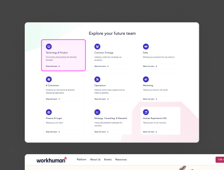
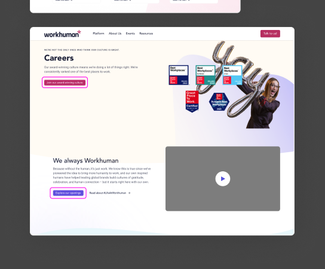
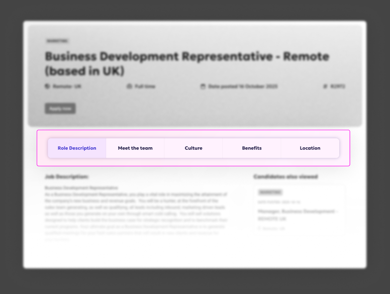
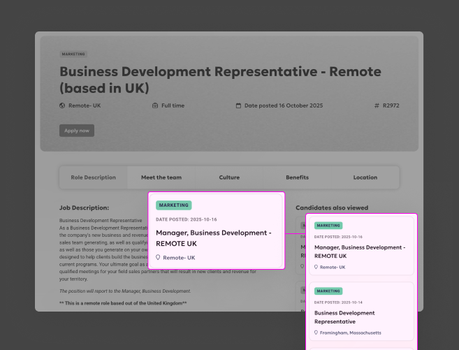
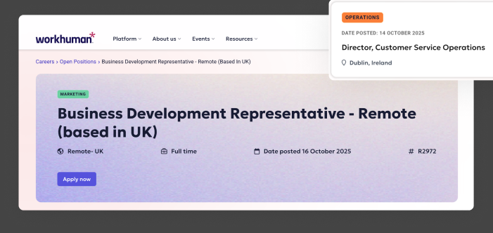
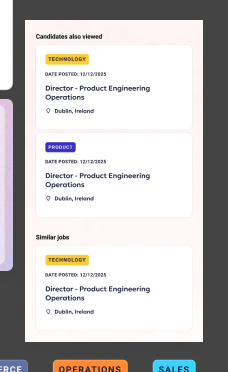
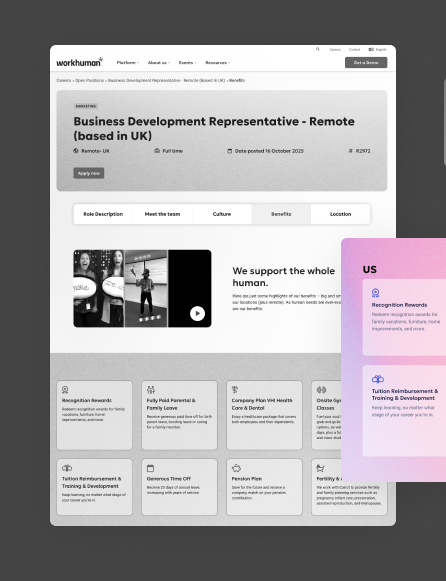
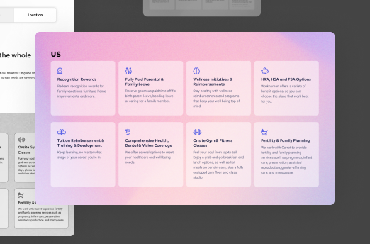
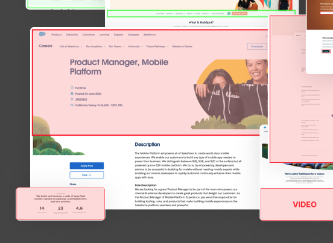

97% of candidates left the careers site without exploring a single job. A three-layer information architecture rebuilt the funnel from the ground up.
Impact
Measured post-launch via HEAP Analytics. The funnel that was losing 97% of visitors now converts the majority of them.


Problem
Workhuman's careers experience was a thin layer over Workday (ATS). Candidates landed, clicked a job, and immediately left for Workday — giving Marketing zero tracking data.
Only 3 out of 100 candidates viewing the careers homepage clicked through to browse job listings.
Candidates weren't finding value in the content and left immediately.
Marketing couldn't prove ROI on recruiting campaigns.
The analytics told a pretty clear story: average session was 2 minutes, candidates viewed 1 job, and 85% clicked Apply and immediately left for Workday. They were using the site like a job board, not an employer brand experience. All the culture content that existed — team pages, benefits, values, awards — was completely invisible to someone who landed and just wanted to see what was open.
Research & Discovery
Four research activities — and the one that surprised me most was the content audit.
Evaluated Canva, Salesforce, Figma, Lattice, Notion, Shopify, Stripe, Intercom, HubSpot, Atlassian across 3 dimensions: careers overview pages, job search/browse experiences, and job detail pages.
Key patterns identified:
Marketing (3): Need attribution data. Recruiting (2): Want qualified candidates. HR (2): Benefits/culture accuracy.
Key insights:
Translation: Candidates treat us like a job board, not an employer brand experience.
All this content existed but wasn't accessible to candidates during job search.
Synthesis
A 2.7% CVR means candidates landed and left immediately — they had no reason to stay. The site was asking people to browse jobs before giving them any reason to want to work there. The homepage needed to answer "why Workhuman?" before it asked anyone to look at listings.
Someone who just heard of Workhuman has different questions than someone evaluating a specific role. Trying to serve both on the same page was part of why the original site failed. Three layers ended up feeling right: one to build interest, one to browse, one to evaluate.
The competitive audit showed Canva and Figma both using tabs on job detail pages. It clicked — candidates don't read a job posting top to bottom. Some care about the team, some about benefits, some about where they'd be working. Tabs let them go straight to what matters to them.
The analytics showed candidates only viewed 1 job per session on average. But from the stakeholder interviews, recruiting knew that their best hires often came in for one role and ended up in a different one. The site wasn't giving people a way to wander — so they didn't.
Solution
Three pages, each with a specific job to do.
Design
Culture storytelling before the job browse. Before: a generic team grid with no narrative. After: compelling headline, employee video, and a clear path to explore roles.
Color-coded departments, optional filters, and persistent breadcrumb navigation. Designed for both explorers ("just looking") and targeted searchers ("I want Product roles in Dublin").


The 5-tab system gives candidates exactly the information they need — when they need it. The right rail keeps additional roles visible without interrupting the current read.


The 13.1% bounce rate on the job browse page was the number I was most glad to see. Low bounce there meant candidates were actually engaged — not just landing and leaving. The homepage wasn't pushing unqualified people into the funnel. It was giving interested people a reason to go deeper.
4 regional variants (US, Canada, Ireland, UK) built from one flexible component system. Adding a new region requires updating content only — no design or engineering work.


Design System Contributions
Every component built for this project was designed to be reused. Several have since been adopted across other parts of the site.

Job details, team pages, office location pages. Horizontal on desktop, dropdown on mobile. Now part of the main design system.
3-item persistent rail, same-department logic, opens in new tab to preserve context. Pattern adopted site-wide after launch.
Used across job cards, team pages, and navigation. Instant visual scanning reduces cognitive load during browsing.
Impact & Outcomes
HEAP Analytics data, October–December 2025. Not a spike — November outperformed October.
Reflection